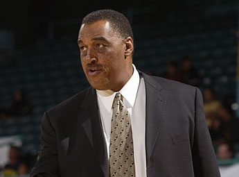

Target Audience
Businesses of all kinds, including:
- Retailers
- Craftsmen
- Traders
- Merchants
- Non-Profits
- Service providers, such as legal, financial, marketing, sales and insurance
- Small businesses, including home-based businesses
Scenarios
Provide information on....
- joining the chamber
- chamber activities calendar
- membership benefits
- membership renewal
- chamber leadership
- chamber meeting notes and agendas
Personas
Dennis Johnson is in his mid 50's. He is a retired basketball professional, now working in insurance, and recently opened a second office for his growing independent insurance business. Dennis is a graduate of Pepperdine University where he majored in macro-biology and minored in 15th century literature. Being a part of the chamber of commerce helps Dennis connect with the local community.
Tiffany Steele is in her late 20's. She runs a home-based business as a virtual assistant. Her days vary greatly, and she enjoys the variety of activities she is asked to perform. In her spare time, besides her avid love of long distance running, Tiffany spends time working at a local blood bank as a staffer, and she also volunteers at the Children's Hospital in the pediatric cancer ward. The Chamber gives Tiffany a ready made list of potential clients for her services.